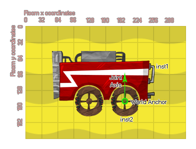

physics_joint_wheel_create(inst1, inst2, anchor_x, anchor_y, axis_x, axis_y, enableMotor, max_motor_torque, motor_speed, freq_hz, damping_ratio, col)
| Argument | La description |
|---|---|
| inst1 | La première instance à se connecter avec l'articulation |
| inst2 | La deuxième instance pour se connecter avec l'articulation |
| anchor_x | La coordonnée x où l'articulation est ancrée, dans le monde du jeu |
| anchor_y | La coordonnée y où l'articulation est ancrée, dans le monde du jeu |
| axis_x | La composante x du vecteur d'axe de roue |
| axis_y | La composante y du vecteur d'axe de roue |
| enableMotor | Si le moteur doit être actif (vrai) ou non (faux) |
| max_motor_torque | Définit le couple maximal du moteur utilisé pour atteindre la vitesse du moteur souhaitée (en Newton par mètre) |
| motor_speed | C'est la vitesse à laquelle le moteur doit tourner |
| freq_hz | C'est la fréquence d'oscillation de l'articulation, en hertz |
| damping_ratio | Ce rapport d'amortissement pour le joint |
| col | Si les deux instances peuvent entrer en collision (vrai) ou non (faux) |
Retourne: index de l'articulation
Un joint de roue combine simplement un piston et un joint rotatif, comme une roue montée sur l'amortisseur d'une voiture. Vous spécifiez le point d'ancrage pour le joint ainsi que les deux instances activées pour la physique, et la première instance agira comme le «corps» de l'articulation, tandis que la seconde sera la «roue» et pourra se déplacer librement l'axe commun. Vous pouvez également définir un vecteur d'axe, qui est la ligne imaginaire le long de laquelle l'articulation agira comme un «ressort» permettant à la roue de rebondir le long de celle-ci en rencontrant des obstacles (un peu comme le piston). L'image suivante illustre ceci:

Si vous choisissez d'activer un moteur, la deuxième instance tournera autour de la position d'ancrage, et vous pouvez définir le couple maximal du moteur utilisé pour atteindre la vitesse du moteur souhaitée (N / m) ainsi que la vitesse à laquelle le moteur doit tourner. Puisque le joint de roue a aussi un axe le long duquel il peut bouger, vous pouvez régler la fréquence d'oscillation (en Hz) ainsi que le taux d'amortissement pour le joint - vous devrez peut-être jouer avec ces valeurs pour les ajuster et il est recommandé que vous commencez avec des valeurs plus petites et les incrémenter jusqu'à ce que vous obteniez l'effet que vous désirez.
Comme pour tous les joints, si vous définissez la valeur "col" sur true alors les deux instances peuvent interagir et entrer en collision les unes avec les autres, mais seulement si elles ont des événements de collision, mais si elle est définie sur false, ils ne vont pas entrer en collision, peu importe quoi.
var mainFixture = physics_fixture_create();
physics_fixture_set_box_shape(mainFixture, 128, 32);
var wheelFixture = physics_fixture_create();
physics_fixture_set_circle_shape(wheelFixture, 32);
var o_id = instance_create_layer(x+25, y + 100, "Instances",
obj_Wheel);
physics_fixture_bind(mainFixture, id);
physics_fixture_bind(wheelFixture, o_id);
physics_joint_wheel_create(id, o_id, o_id.x, o_id.y, 0, 1, true,
10, 1, 15, 6, false);
physics_fixture_delete(mainFixture);
physics_fixture_delete(wheelFixture);
Le code ci-dessus crée et définit deux nouveaux appareils. Ceux-ci sont ensuite liés à l'instance appelante et une nouvelle instance créée avant l'application d'une articulation de roue pour les connecter, après quoi les appareils sont supprimés de la mémoire.